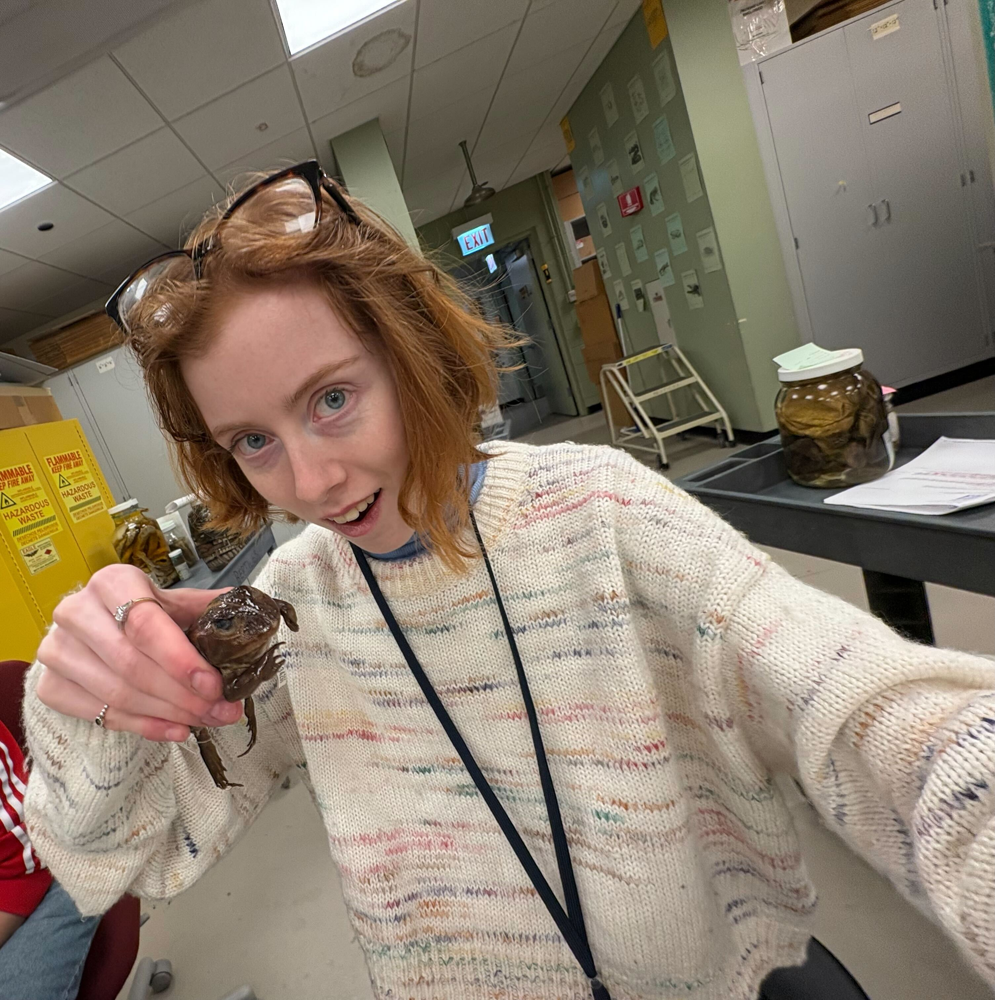
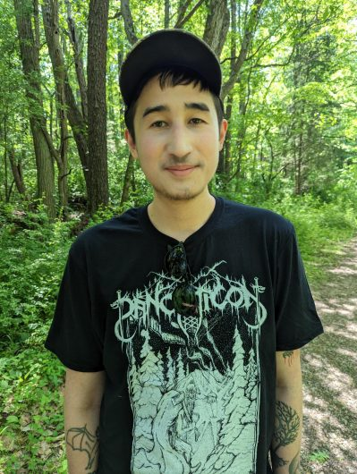
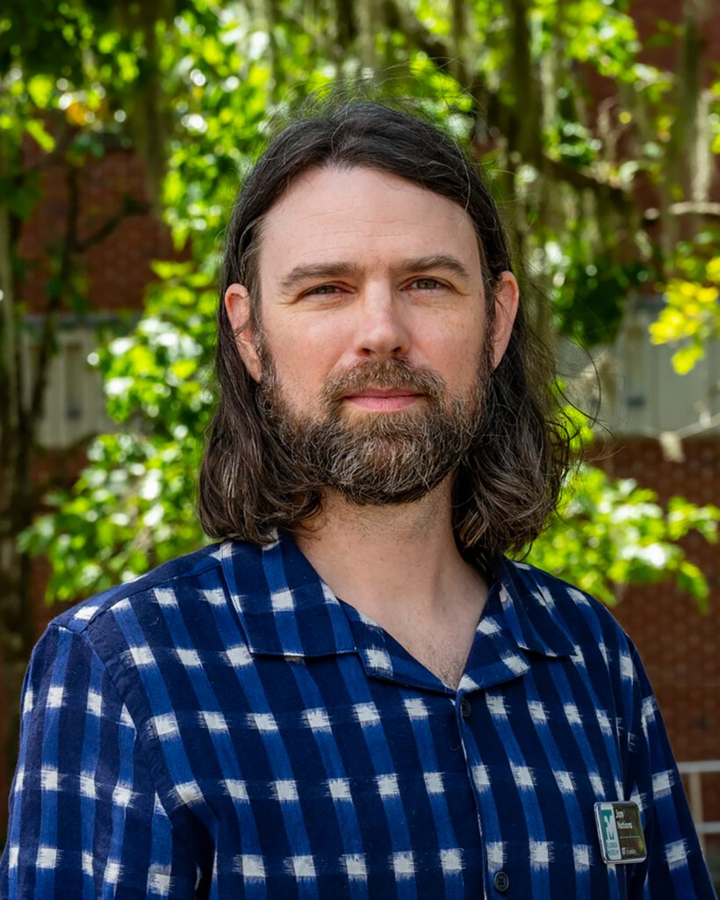

People
The Boss
Graham Slater: I’m a macroevolutionary
paleobiologist with interests in the tempo and mode of ecomorphological
diversification across space and time. I use data from living and
extinct species to address these questions, typically rooted in a
phylogenetic framework. Although I’m interested in general questions
about evolutionary pattern and process and my students work on diverse
systems, most of my own work has focused on mammalian evolution,
particularly the order Carnivora.
Current Graduate Students

Melissa Wood is a fifth year PhD Candidate in the
Department of the Geophysical Sciences. Melissa’s dissertation research
uses a combines vertebrate paleontology with stratigraphy to understand
mammalian commmunity responses to climate and environmental change in
the Eocene of North America. Melissa is coadvised with Susan Kidwell

Menna Jones is a second year PhD student in the
Department of the Geophysical Sciences. Menna is interested in the use
of statistical and mathematical approaches to study macroevolutionary
pattern and processes. Her dissertation work is focusing on modeling the
causes and consequences of ecomorphological evolution and microhabitat
use in extant and extinct frogs.

Magdalen Mercado is a second year PhD student in the
Department of the Committee on Evolutionary Biology. Mags is interested
in the interplay of genetic and environmental factors in evolutionary
change. Her dissertation work is focusing on the evolution of the
amniote vertebral column using a variety of different data types and
models.

Henry Fulghum is a second year PhD student in the
Department of the Committee on Evolutionary Biology, coadvised with
Zhe-Xi Luo. Henry is interested in the evolution of Mesozoic mammals, in
particular the ecomorphological diversity of non-crown mammalian clades,
and their potential ecological interactions.
Lab Alums

Dr. C.
Tomomi Parins-Fukuchi (T. C. Chamberlin Post-Doctoral
Fellow 2019-2021): Tomo is currently Assistant Professor of Ecology and
Evolution at University of Toronto, where he continues to pursue
evolutionary questions relevant to biology and paleontology using
diverse computational methods.

Dr. Jonathan
Nations (NSF Post-Doctoral Fellow 2021-2024). Jon is
currently Assistant Curator of Mammalogy at the Florida Museum of
Natural History (University of Florida) where he continues to use field
collections, observations, and museum specimens to examine the drivers
of morphological variation, primarily using small mammals as model
systems. Jon is increasingly interested in the use of complex
statistical models, such as Bayesian multi-level models, and Artificial
Intelligence approaches for addressing macroevolutionary and ecological
questions.

Dr. Rossy
Natale (PhD 2023 Integrative Biology): Rossy studied the
evolution of functional and ecological morphological variation in
charadriiform birds and the implications of that variation for community
assembly and on potential responses to climate change. Rossy is now a
postdoctoral associate at the Cornell Lab of Ornithology, where she is
continuing to use spatial statistical approaches to study the
implications of human activity for bird populations.

Dr. David
Černý (PhD 2024 Geophysical Sciences): David is interested
in how we infer phylogenetic trees of living and extinct organisms and
develops new methods and pipelines to improve paleo-phylogenetic
inference. David is currently doing postdoctoral research with Mike
Alfaro at UCLA
Dr Anna Wisniewski (PhD 2024 Geophysical Sciences). Anna’s dissertation work used phylogenetic and developmental models to understand macroevolutionary patterns in horses. Anna is now a Postdoctoral Fellow at the University of Michigan, where she is working with Luke Weaver on evolutionary and ecology trends in mammalian evolution across the PETM.

Dr. Alexa
Wimberly (PhD 2024 Integrative Biology): Alexa’s
dissertation work focused on the evolution of locomotor behavior and
morphology in tetrapods, particularly cursorial mammals. Alexa is
currently a postdoctoral fellow in vertebrate paleontology at the
American Museum of Natural History.